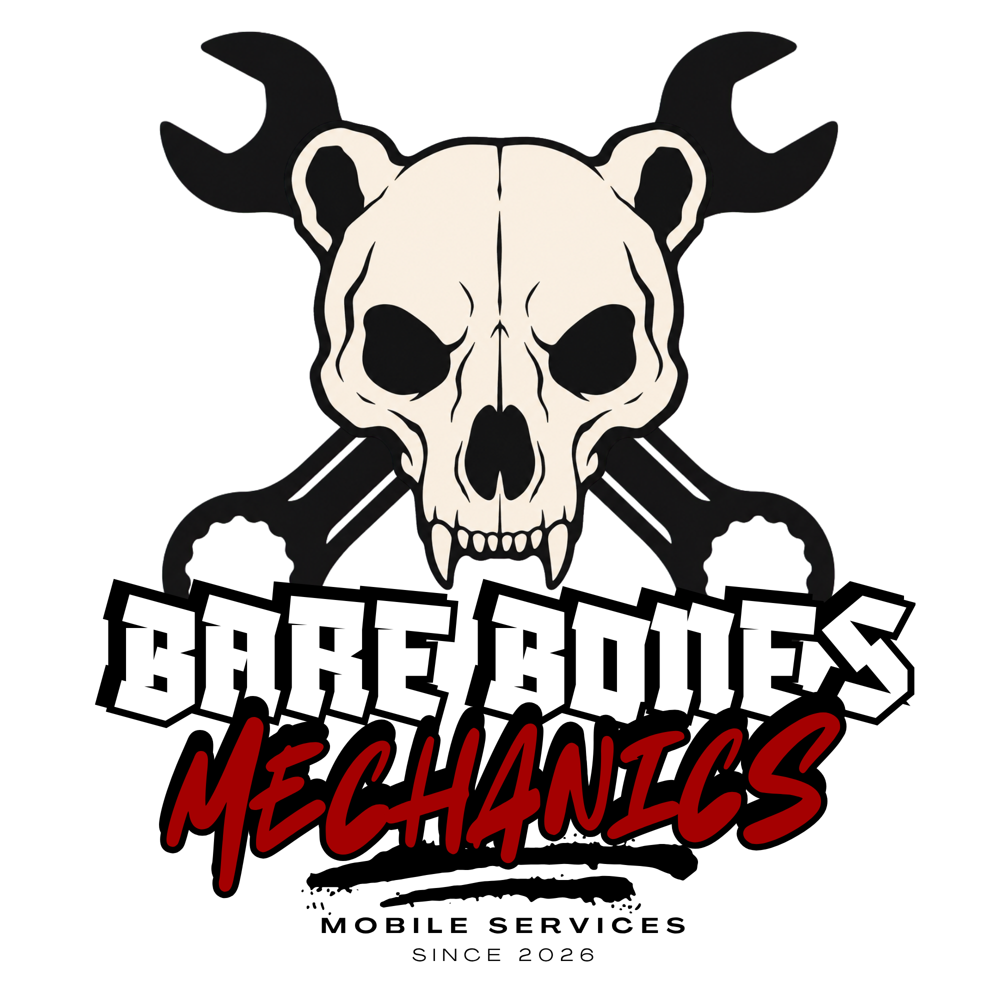

01
Submit your service intake
Tell us about your vehicle, requested maintenance, and service location.

Bare BonesMechanicsSimple from the start
Every appointment begins with an intake review so we can confirm the requested service is feasible, legal, and safe at the service location.
Complete the intake form with your vehicle information, requested service, and location details.
Open intake form →Choose an available appointment window. This holds your preferred time while we review the request.
View available times →We review the scope and confirm whether the work can be completed safely at your location. We send a quote or follow up with questions.
Approve and pay the quote securely through Stripe or PayPal. Payment confirms your appointment.
Complete both steps
Your request is not complete until you submit the intake form and select a provisional appointment time.